# -*- coding: utf-8 -*-
# 导入必要的库
# pip install akshare
import akshare as ak
import pandas as pd
import matplotlib.pyplot as plt
from datetime import datetime
# 屏蔽提示信息
import warnings
warnings.filterwarnings("ignore")
# 设置中文字体支持（如已设置可省略）
plt.rcParams['font.sans-serif'] = ['SimHei']
plt.rcParams['axes.unicode_minus'] = False 9 上证指数的时序特征
本讲使用 akshare 库获取上证指数的历史数据，并使用 statsmodels 库进行时间序列分析。主要包括：
- 在线获取上证指数的历史数据，包括：收盘价、开盘价、最高价、最低价、成交量等。
- 计算日收益率、周收益率和年化收益率，并采用
matplotlib库进行可视化。 - 图示收益率的分布特征
- 收益率的直方图、密度函数图等
- 收益率的自相关图、偏自相关图等
- 收益率的波动性分析
- 收益率标准差、方差等
9.1 获取数据
# 设置起始时间和结束时间
start_date = '1991-01-01'
end_date = datetime.now().strftime('%Y-%m-%d') # 设置为当前日期
# 获取上证指数的历史数据
sz_index = ak.stock_zh_index_daily(symbol="sh000001") # 上证指数代码为 "sh000001"
# 重命名列名以便后续处理
sz_index.rename(columns={'date': 'day', 'close': 'close'}, inplace=True)
# 筛选指定起止时间的数据
sz_index['day'] = pd.to_datetime(sz_index['day']) # 确保日期列为 datetime 类型
sz_index = sz_index[(sz_index['day'] >= pd.to_datetime(start_date)) & (sz_index['day'] <= pd.to_datetime(end_date))]
print('\n' + '='*10 + ' Head' + '='*10)
print(sz_index.head()) # 显示前几行数据
print('\n' + '='*10 + ' Tail' + '='*10)
print(sz_index.tail()) # 显示后几行数据
========== Head==========
day open high low close volume
9 1991-01-02 127.61 128.84 127.61 128.84 9100
10 1991-01-03 128.84 130.14 128.84 130.14 14100
11 1991-01-04 131.27 131.44 130.14 131.44 42000
12 1991-01-07 131.99 132.06 131.45 132.06 21700
13 1991-01-08 132.62 132.68 132.06 132.68 292600
========== Tail==========
day open high low close volume
8599 2026-03-16 4092.249 4096.133 4048.087 4084.786 73222709800
8600 2026-03-17 4086.295 4108.400 4049.580 4049.907 67877122400
8601 2026-03-18 4053.305 4065.373 4023.030 4062.984 62387310200
8602 2026-03-19 4028.542 4042.022 3994.165 4006.552 66725542200
8603 2026-03-20 4004.573 4022.703 3955.711 3957.053 666798387009.2 收盘价走势图
9.2.1 静态图形
# 绘制收盘价走势图
plt.figure(figsize=(14, 7))
plt.subplot(2, 1, 1)
plt.plot(sz_index['day'], sz_index['close'], label='Close Price', color='blue')
plt.title('Shanghai Composite Index Daily Close Price')
plt.legend()
plt.grid()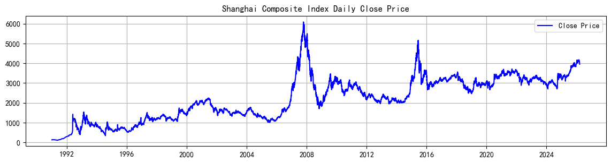
提示词
绘制过去半年的时序图
# 过去半年的收盘价时序图
end_day = sz_index['day'].max()
start_day = end_day - pd.DateOffset(months=6)
recent_half_year = sz_index.query("@start_day <= day <= @end_day")
plt.figure(figsize=(12, 4))
plt.plot(recent_half_year['day'], recent_half_year['close'], color='royalblue', linewidth=1.5)
plt.title('上证指数过去半年收盘价时序图')
plt.xlabel('日期')
plt.ylabel('收盘价')
plt.grid(alpha=0.3)
plt.tight_layout()
plt.show()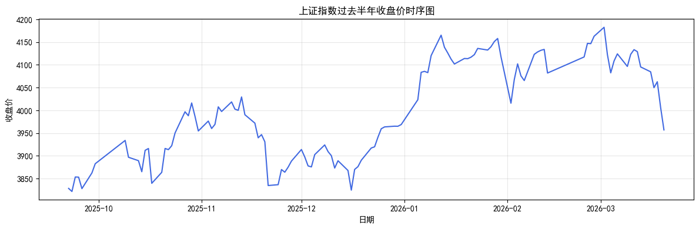
9.2.2 交互图
接下来，我们使用 plotly 扩展包创建一个交互式折线图。顾名思义，这类图形可以在在鼠标悬停时，显示该时点的日期、收益率等信息。要点如下：
数据准备
- 时间筛选：通过
start_date和end_date设置起始时间和结束时间，结合pandas.to_datetime()函数将日期列转换为标准时间格式，并筛选出指定时间区间内的数据。 - 数据合并：使用
merge()函数将包含日收益率的 DataFrame 与主数据表按照日期列进行合并，使得每一日的收盘价配套显示对应的日收益率。
- 时间筛选：通过
图形绘制
- 图层添加：调用
go.Scatter()添加一条收盘价的折线图（mode='lines'表示仅显示折线，不显示节点）。 - 交互信息：利用
hovertemplate参数自定义鼠标悬停时显示的内容，包括：日期（格式化为年-月-日）、收盘价（保留两位小数）、日收益率（百分号格式，保留两位小数）等。
- 图层添加：调用
图表布局设置
- 通过
fig.update_layout()设置图表标题、坐标轴标题、交互模式等：hovermode='x unified'：使得交互提示在同一垂直线上统一显示template='plotly_white'：采用白色背景模板
- 设置
margin确保图形四周留有足够的空间，避免遮挡
- 通过
该图表可嵌入网页或 Jupyter Notebook 中动态展示，是教学、报告与展示金融时间序列数据的有力工具。
# 安装必要的库（如未安装）
# !pip install plotly akshare pandas
import pandas as pd
import plotly.graph_objects as go
from datetime import datetime
import akshare as ak
import plotly.io as pio
pio.renderers.default = "browser" # 在浏览器中查看交互图
# 设置起始时间和结束时间
start_date = '2005-01-01'
end_date = datetime.now().strftime('%Y-%m-%d') # 设置为当前日期
# 获取上证指数的历史数据
sz_index = ak.stock_zh_index_daily(symbol="sh000001") # 上证指数代码为 "sh000001"
# 重命名列名以便后续处理
sz_index.rename(columns={'date': 'day', 'close': 'close'}, inplace=True)
# 将日期列转换为 datetime 类型
sz_index['day'] = pd.to_datetime(sz_index['day'])
# 计算日收益率
sz_index['daily_return'] = sz_index['close'].pct_change()
# 筛选指定时间区间内的数据
filtered_data = sz_index.query(" @start_date <= day <= @end_date ")
# 创建交互式图形对象
fig = go.Figure()
# 添加收盘价的折线图
fig.add_trace(go.Scatter(
x=filtered_data['day'],
y=filtered_data['close'],
mode='lines', # 只显示线条
name='收盘价',
line=dict(color='blue'),
customdata=filtered_data[['daily_return']].values,
hovertemplate=(
'<b>日期：</b> %{x|%Y-%m-%d}<br>'
'<b>收盘价：</b> %{y:.2f}<br>'
'<b>日收益率：</b> %{customdata[0]:.2%}<extra></extra>'
)
))
# 设置图表整体布局
fig.update_layout(
title='上证指数交互图',
xaxis_title='日期',
yaxis_title='收盘价',
hovermode='x unified',
template='plotly_white',
margin=dict(l=60, r=40, t=60, b=50)
)
# 显示图表
fig.show()9.2.3 钉形图
钉形图（candlestick chart）是一种常用的金融图表，用于显示某一时间段内的价格波动情况。它通过“钉子”形状的图形来表示开盘价、收盘价、最高价和最低价。钉形图的主要优点在于能够直观地展示价格走势和波动范围，便于分析市场情绪和趋势。
有关钉形图的详细解释，参见 Everything you can do with a time series
钉形图的构建主要包括以下几个步骤：
- 数据准备：从
akshare获取上证指数的历史数据，包括开盘价、收盘价、最高价和最低价等。将数据转换为pandasDataFrame 格式，并设置日期为索引。 - 图形绘制：使用
plotly.graph_objects中的go.Candlestick()函数创建钉形图。该函数需要传入开盘价、收盘价、最高价和最低价等数据，并设置相应的颜色（上涨为绿色，下跌为红色）。 - 图表布局设置：通过
fig.update_layout()设置图表的标题、坐标轴标签、背景颜色等属性。可以使用plotly提供的多种模板来美化图表。 - 交互功能：钉形图支持鼠标悬停时显示详细信息，包括日期、开盘价、收盘价、最高价和最低价等。可以通过设置
hovertemplate来定制显示内容。
import plotly.graph_objects as go
import plotly.io as pio
pio.renderers.default = "browser" # 在浏览器中查看交互图
# 设置起始时间和结束时间
start_date = '2025-01-01'
#end_date = '2026-03-20'
end_date = datetime.now().strftime('%Y-%m-%d') # 设置为当前日期
# 筛选绘图所需的列
candlestick_data = sz_index.query(" @start_date <= day <= @end_date ")[['day', 'open', 'high', 'low', 'close']]
# 创建钉形图
fig = go.Figure(data=[go.Candlestick(
x=candlestick_data['day'], # 日期
open=candlestick_data['open'], # 开盘价
high=candlestick_data['high'], # 最高价
low=candlestick_data['low'], # 最低价
close=candlestick_data['close'], # 收盘价
increasing_line_color='green', # 上涨颜色
decreasing_line_color='red' # 下跌颜色
)])
# 设置图表标题和布局
fig.update_layout(
title='上证指数钉形图',
template='plotly_white',
xaxis_rangeslider_visible=False, # 隐藏范围滑块
xaxis_tickformat='%Y-%m-%d', # 设置横轴刻度格式
xaxis_tickangle=-30, # 旋转横轴刻度 -30 度
)
# 设置横轴刻度间隔
fig.update_xaxes(
tickmode='array',
tickvals=candlestick_data['day'][::5], # 每隔 5 天显示一个刻度
ticktext=candlestick_data['day'][::5].dt.strftime('%Y-%m-%d') # 格式化日期
)
# 显示图表
fig.show() # 在浏览器中打开交互式图表
#fig.write_html("chart.html") # 同时保存一份 HTML 文件备用9.3 收益率
收益率是金融时间序列分析中的重要指标，通常用于衡量资产价格变动的幅度和速度。我们将计算上证指数的日收益率、周收益率和年化收益率，并进行可视化展示。
- 日收益率：表示某一天的收盘价与前一天收盘价的比值变化，通常用百分比表示。
- 周收益率：表示某一周的收盘价与前一周收盘价的比值变化，通常用百分比表示。
- 年化收益率：表示某一年内的收益率，通常用百分比表示。年化收益率可以通过将日收益率乘以交易天数来计算。
9.3.1 日收益率时序图
- 计算方法：日收益率 = (今日收盘价 - 昨日收盘价) / 昨日收盘价
- 可视化：
- 使用
plt.plot(x, y)绘制日收益率的折线图，观察其波动趋势。 - 使用
matplotlib绘制日收益率的直方图和密度函数图，观察其分布特征。
- 使用
# 计算日收益率
daily_return = sz_index['close'].pct_change() # 计算日收益率
# 绘制日收益率走势图
#-- 控制绘图的时间范围
#start_plot_date = '1991-01-01'
start_date = '2024-01-01'
#end_date = '2026-03-20'
end_date = datetime.now().strftime('%Y-%m-%d') # 设置为当前日期
sz_index_plot = sz_index.query(" @start_date <= day <= @end_date ")
# 绘制日收益率走势图
plt.figure(figsize=(16, 8)) # 调整图形尺寸
plt.subplot(2, 1, 2)
plt.plot(sz_index_plot['day'],
sz_index_plot['daily_return'],
label='Daily Return',
color='red')
plt.title('Shanghai Composite Index Daily Return')
plt.xlabel('Date')
plt.ylabel('Daily Return')
plt.legend()
plt.grid()
plt.tight_layout() # 调整子图间距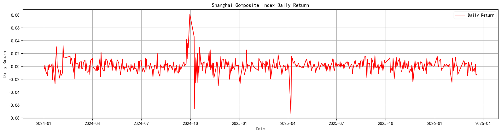
9.3.2 箱线图（Boxplot）
箱线图用于展示数据的分布特征，常用于识别数据的集中趋势、离散程度以及可能存在的异常值（outliers）。它特别适合金融数据的分布分析，比如收益率、资产波动率等。
箱线图由以下几个核心部分组成：
- 中位数（Median）：箱体中间的横线，表示数据的第 50 个百分位数。
- 第一四分位数（Q1）：箱体下缘，表示数据的第 25 个百分位数。
- 第三四分位数（Q3）：箱体上缘，表示数据的第 75 个百分位数。
- 四分位距（IQR）：\(IQR = Q3 - Q1\)，表示数据的中间 50% 的范围。
- 上胡须：延伸至 \(Q1 - 1.5 \times IQR\) 的位置，用于捕捉非异常值的最大范围。
- 下胡须：延伸至 \(Q3 + 1.5 \times IQR\) 的位置，用于捕捉非异常值的最小范围。
- 异常值（Outliers）：胡须之外的黑点，表示极端收益波动的观察值。

Q1-1.5IQR Q1 median Q3 Q3+1.5IQR
|-----:-----|
o |--------| : |--------| o o
|-----:-----|
flier <-----------> fliers
IQR# 先提取年份列（如果之前没有创建过）
sz_index['year'] = sz_index['day'].dt.year
# 筛选 20XX 年的数据
box_year = 2025
df_box_year = sz_index[sz_index['year'] == box_year]['daily_return'].dropna()
plt.figure(figsize=(5, 3))
plt.boxplot(df_box_year)
plt.grid(axis='y', linestyle='--', alpha=0.7)
plt.show()9.3.3 同时呈现多个箱线图
在实际应用中，可以同时呈现多个箱线图，以便比较不同时间段或不同资产的收益率分布特征。可以使用 matplotlib 的 subplots() 函数创建多个子图，并在每个子图上绘制箱线图。
import seaborn as sns
import matplotlib.pyplot as plt
# 提取年份列
sz_index['year'] = sz_index['day'].dt.year
# 筛选指定年份的数据
selected_years = [2000, 2005, 2010, 2015, 2020, 2024]
filtered_data = sz_index[sz_index['year'].isin(selected_years)]
# 绘制多个年度的箱型图
plt.figure(figsize=(6, 3))
sns.boxplot(x='year', y='daily_return', data=filtered_data, palette='Set3')
plt.grid(axis='y', linestyle='--', alpha=0.7)
plt.show()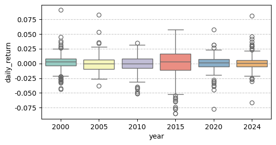
9.4 直方图
9.4.1 何谓直方图？
直方图（Histogram）是一种用于展示数值型变量分布情况的图形工具。其原理是将数据划分为若干连续、不重叠的区间（称为“bin”或“箱子”），统计每个区间内数据点的数量，并以矩形的高度表示频数或频率。
设有一组日收益率数据 \(\{r_1, r_2, \ldots, r_n\}\)，我们将其划分为 \(K\) 个等宽的区间，每个区间的宽度为：
\[ h = \frac{\max(r) - \min(r)}{K} \]
第 \(k\) 个区间为 \([a_k, a_{k+1})\)，其频数记为 \(f_k\)，那么对应的矩形高度就是 \(f_k\)（或标准化后的频率）。绘图过程中，横轴表示收益率区间，纵轴表示该区间的频数或频率。
9.4.2 核心代码说明
以下代码用于绘制上证指数的日收益率直方图：
sz_index_plot['daily_return'].dropna().hist(bins=200, figsize=(8, 5))说明如下：
daily_return：表示日收益率列。dropna()：删除缺失值，避免影响绘图。hist()：调用pandas.DataFrame.hist()方法，底层封装了matplotlib.pyplot.hist()。bins=200：将数据划分为 200 个等宽区间，越大越平滑，但过大可能导致过度拟合。
9.4.3 常用参数汇总
| 参数名 | 说明 | 示例 |
|---|---|---|
bins |
设置箱子的数量或箱边界 | bins=50，或 bins=[-0.1, -0.05, 0, 0.05, 0.1] |
density |
是否标准化为概率密度（面积为 1） | density=True |
figsize |
图形大小（宽, 高） | figsize=(10, 6) |
color |
设置柱体颜色 | color='skyblue' |
alpha |
设置透明度（0~1） | alpha=0.7 |
grid |
是否显示网格 | grid=True |
9.4.4 实用建议
- 若要观察收益率的分布是否对称，建议加上垂直参考线，例如均值或中位数。
- 若需与正态分布对比，可叠加核密度曲线（使用
seaborn.histplot或sns.kdeplot）。 - 若数据包含极端值，可调整
xlim参数限制横轴范围，聚焦主要密度区域。
直方图有助于识别收益率分布的偏态、厚尾特征，是金融时间序列分析中不可或缺的工具之一。
# 绘制日收益率的基本直方图
sz_index_daily_return = sz_index_plot['daily_return'].dropna()
sz_index_daily_return.hist(bins=100, # 设置直方图的柱子数量
color='green',
alpha=0.7, # 设置透明度
figsize=(8, 3))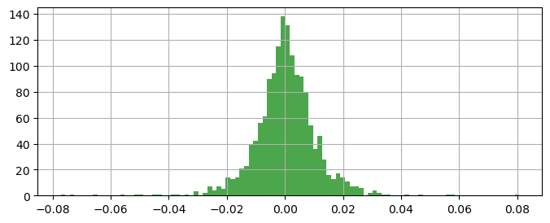
9.5 核密度函数
核密度函数 (Kernel Density Estimation, KDE) 是一种用于估计未知概率密度函数的非参数方法，适用于连续型数据且不依赖于事先指定的分布形式。其基本思想是：在密度函数的每一个估计点上，根据样本点到该点的距离，使用核函数分配权重并加权平均，从而构建平滑的密度曲线。
设样本为 \(x_1, x_2, \dots, x_n\)，其密度函数在任意点 \(x\) 上的估计形式为：
\[ \hat{f}_h(x) = \frac{1}{n h} \sum_{i=1}^{n} K\left( \frac{x - x_i}{h} \right) \]
其中：
- \(K(\cdot)\) 是核函数（kernel function），通常是一个对称的概率密度函数；
- \(h > 0\) 是带宽参数（bandwidth），控制核函数的缩放程度和平滑水平；
- \(\hat{f}_h(x)\) 是点 \(x\) 处的密度估计值。
9.5.1 核函数
在实际应用中，核函数的选择对估计结果的影响相对较小，而带宽的设置对估计曲线的光滑程度影响较大。
核函数的作用可以理解为：在估计点 \(x\) 处，根据样本点 \(x_i\) 与 \(x\) 之间的距离，赋予不同的权重。距离 \(x\) 越近的样本点，其权重越大；距离越远，权重越小。通过对所有样本点的加权平均，得到该点的密度估计。将所有位置的估计值拼接起来，即可得到整体的密度函数曲线。
为了更清楚地理解核函数的加权机制，我们可以对距离进行标准化处理，设：
\[ u_i = \frac{X_i - c}{h} \]
则以下两式等价：
\[ |u_i| \leq 1 \Longleftrightarrow |X_i - c| \leq h \]
记 \(D_i = |X_i - c|\)，表示第 \(i\) 个观察值与估计点 \(c\) 的距离。核函数的任务就是为每个 \(D_i\) 分配权重。
如下图所示，三种典型核函数的权重分配机制具有显著差异：

- Uniform 核：在 \(|u| \leq 1\) 范围内赋予所有观察值相同的权重，超出范围的样本点权重为 0 (相当于弃之不用)。对应的密度估计不具有平滑性，常用于教学演示。
- Triangle 核：采用线性下降的加权方式，距离估计点越近权重越大，边界处权重为 0，估计结果具有一定的连续性。
- Epanechnikov 核：采用抛物线型权重函数，在 \(u=0\) 处取得最大值，具有最小均方误差（MSE）性质，估计曲线光滑、效率较高。
- Gaussian 核：采用正态分布函数，所有样本点均有非零权重，平滑程度高，适用于大多数实际应用场景。
9.5.2 核函数的性质
常见核函数及其表达式：
Uniform 核函数 \(K(u) = \frac{1}{2} \cdot \mathbf{1}\{\left|u\right| \leq 1\}\) （也称为 Rectangular 核函数）
Triangle 核函数 \(K(u) = (1 - \left|u\right|) \cdot \mathbf{1}\{\left|u\right| \leq 1\}\)
Epanechnikov 核函数 \(K(u) = \frac{3}{4}(1 - u^2) \cdot \mathbf{1}\{\left|u\right| \leq 1\}\)
Quartic 核函数 \(K(u) = \frac{15}{16}(1 - u^2)^2 \cdot \mathbf{1}\{\left|u\right| \leq 1\}\)
Triweight 核函数 \(K(u) = \frac{35}{32}(1 - u^2)^3 \cdot \mathbf{1}\{\left|u\right| \leq 1\}\)
Gaussian 核函数 \(K(u) = \frac{1}{\sqrt{2\pi}} \exp\left(-\frac{u^2}{2}\right)\)
Cosinus 核函数 \(K(u) = \frac{\pi}{4} \cos\left(\frac{\pi}{2} u\right) \cdot \mathbf{1}\{\left|u\right| \leq 1\}\)

核函数通常需要满足以下数学性质：
- 非负性：\(K(u) \geq 0\)
- 单位积分：\(\int_{-\infty}^{\infty} K(u) \, du = 1\)
- 对称性：\(K(u) = K(-u)\)
- 有限的二阶矩：\(\int u^2 K(u) \, du < \infty\)
实际使用中，还有一些细节需要注意。例如，部分文献或软件将 \(\mathbf{1}\{|u| \leq 1\}\) 写为 \(\mathbf{1}\{|u| < 1\}\)。对于连续变量，两者几乎没有区别；但若数据是离散型的（如整数型变量），则可能影响边界值是否被纳入计算。
核密度估计的构造可以理解为：以每一个样本点为中心放置一个缩放后的核函数，然后在每一个估计位置 \(x\) 上，取所有样本点的核值加权平均。因此，它是一种基于样本加权“局部贡献”的整体平滑过程。
总结而言：
- 核函数定义了如何根据样本点与估计点之间的距离分配权重；
- 带宽参数决定了每个样本点的影响范围；
- 合理选择核函数和带宽参数是核密度估计中最关键的步骤；
- 核密度估计为我们提供了一种平滑、灵活且无需模型假设的分布估计方法，广泛应用于经济学、金融学、机器学习等领域的探索性数据分析任务中。
import seaborn as sns
# 日收益率的核密度函数图
sz_index_plot['daily_return'].plot(kind='kde') #内置函数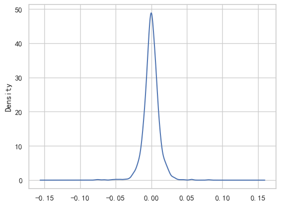
'''提示词
用最简单的命令同时呈现 2005, 2010, 2015, 2020 和 2024 年的收益率密度函数图
'''
import seaborn as sns
import matplotlib.pyplot as plt
# 筛选指定年份的数据
#selected_years = [2005, 2010, 2015, 2020, 2024]
selected_years = [2005, 2015, 2024]
filtered_data = sz_index[sz_index['day'].dt.year.isin(selected_years)]
# 创建图形对象
plt.figure(figsize=(5, 3))
# 绘制每个年份的核密度估计图
for year in selected_years:
sns.kdeplot(
data=filtered_data[filtered_data['day'].dt.year == year]['daily_return'].dropna(),
label=f'{year}'
)
# 添加标题和图例
plt.title(f'各年度收益率密度函数图)', fontsize=12)
plt.xlabel('日收益率', fontsize=10)
plt.ylabel('密度', fontsize=10)
plt.legend(title='年份')
plt.grid()
plt.show()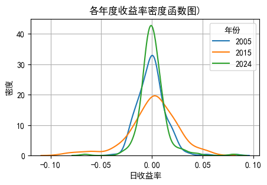
9.6 周收益率和月收益率
- 周收益率：
(本周收盘价 - 上周收盘价) / 上周收盘价 - 月收益率：
(本月收盘价 - 上月收盘价) / 上月收盘价
# 计算每周的收益率
sz_index['week'] = sz_index['day'].dt.isocalendar().week # 提取周数
sz_index['year_week'] = sz_index['day'].dt.year.astype(str) \
+ '-w' \
+ sz_index['week'].astype(str).str.zfill(2) # 组合年份和周数，周数补零
# 计算每周的收益率
weekly_return = sz_index.groupby('year_week')['close'].apply(lambda x: (x.iloc[-1] - x.iloc[0]) / x.iloc[0])
weekly_return = weekly_return.reset_index() # 重置索引
weekly_return.columns = ['Year_Week', 'Weekly_Return'] # 重命名列
# 打印结果
print(weekly_return.sort_values(by='Year_Week').tail(10)) # 按时间顺序显示最后20周的收益率 Year_Week Weekly_Return
1729 2025-w09 -0.015455
1730 2025-w10 0.016769
1731 2025-w11 0.015863
1732 2025-w12 -0.017891
1733 2025-w13 -0.005555
1734 2025-w14 0.001877
1735 2025-w15 0.045744
1736 2025-w16 0.004267
1737 2025-w17 0.001102
1738 2025-w18 -0.002854# 设置起始时间和结束时间
start_week = '2005-w01'
end_week = '2028-w16'
# 筛选指定时间范围内的数据
filtered_weekly_return = weekly_return[(weekly_return['Year_Week'] >= start_week) &
(weekly_return['Year_Week'] <= end_week)]
# 绘制每周收益率走势图
plt.figure(figsize=(14, 7))
plt.plot(filtered_weekly_return['Year_Week'], filtered_weekly_return['Weekly_Return'], label='Weekly Return', color='green')
plt.title('Shanghai Composite Index Weekly Return')
plt.xlabel('Year')
plt.ylabel('Weekly Return')
# 修改 x 轴标签，仅显示年份
year_labels = [label.split('-')[0] if label.endswith('-w01') else '' for label in filtered_weekly_return['Year_Week']]
plt.xticks(ticks=range(len(year_labels)), labels=year_labels, rotation=0)
# 添加 y=0 的水平线
plt.axhline(y=0, color='red', linestyle='--', linewidth=1)
# 设置 grid，仅显示主要的 grid
plt.grid(visible=True, which='major', linestyle='-', linewidth=0.3)
plt.legend()
plt.tight_layout() # 调整子图间距
plt.show() # 显示图形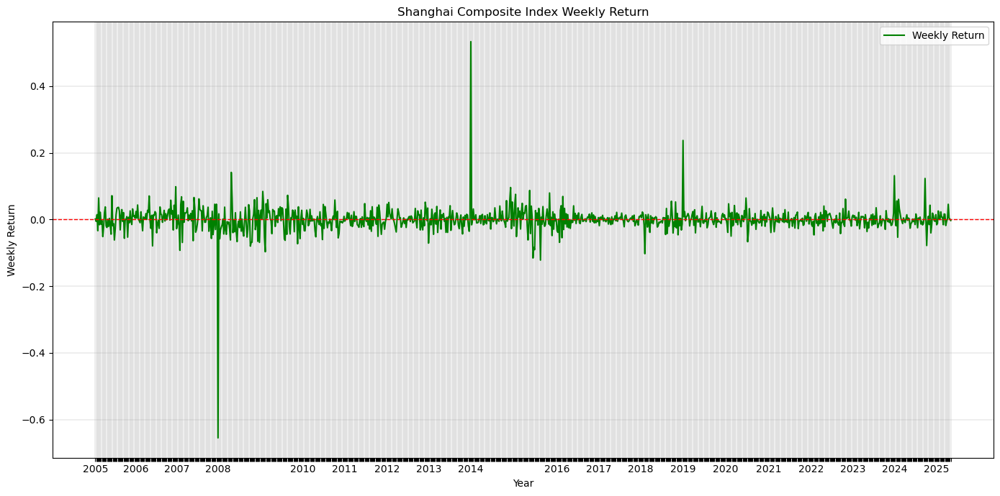
9.6.0.1 核心代码解读：
sz_index['day'].dt.isocalendar().week：获取日期的周数。具体而言，dt.isocalendar()返回一个 DataFrame，其中包含 ISO 日历的年、周和星期几。我们只需要周数，因此使用.week来提取它。类似的，可以使用.dt.isocalendar().month来获取月份；用.dt.isocalendar().year来获取年份。sz_index['day'].dt.isocalendar().year：获取日期的年份。类似地，使用.year来提取年份。
weekly_return = sz_index.groupby('year_week')['close'].apply(lambda x: (x.iloc[-1] - x.iloc[0]) / x.iloc[0])：对每个周进行分组，计算该周的收益率。具体而言，groupby('year_week')将数据按年和周进行分组，然后使用apply()函数对每个组应用一个 lambda 函数。这个 lambda 函数计算该组的最后一个收盘价和第一个收盘价之间的收益率。apply()函数的用法：apply()函数可以对 DataFrame 或 Series 的每一行或每一列应用一个函数。它可以用于数据转换、聚合和其他操作。在这里，我们使用apply()函数来计算每个组的收益率。apply()函数的语法格式为：python DataFrame.apply(func, axis=0, raw=False, result_type=None, args=(), **kwds)func：要应用的函数，可以是 Python 内置函数或自定义函数。axis：指定应用函数的轴，0 表示按列应用，1 表示按行应用。默认值为 0。raw：如果为 True，则传递原始数据而不是 Series 对象。默认值为 False。
lambda x: (x.iloc[-1] - x.iloc[0]) / x.iloc[0]：这是一个匿名函数，用于计算每个组的收益率。x是传递给 lambda 函数的参数，表示当前组的数据。x.iloc[-1]表示该组的最后一个收盘价，x.iloc[0]表示该组的第一个收盘价。通过计算这两个值之间的差值并除以第一个收盘价，我们得到了该组的收益率。
# 列出周收益率绝对值大于 0.2 的周
high_weekly_return = weekly_return[weekly_return['Weekly_Return'].abs() > 0.2]
# 按收益率排序
high_weekly_return = high_weekly_return.sort_values(by='Weekly_Return', ascending=False)
print('\n' + '---'*5 + 'high weekly return' + '---'*5)
print(high_weekly_return) # 打印结果
# 按时间排序
high_weekly_return = high_weekly_return.sort_values(by='Year_Week') # 按时间排序
print('\n' + '---'*5 + 'sorted by Year_Week' + '---'*5)
print(high_weekly_return) # 打印结果
---------------high weekly return---------------
Year_Week Weekly_Return
72 1992-w21 1.343377
0 1991-w01 1.272198
259 1996-w01 0.704906
99 1992-w48 0.553815
1159 2014-w01 0.533468
186 1994-w31 0.532717
226 1995-w20 0.470363
118 1993-w14 0.311382
309 1997-w01 0.298735
1415 2019-w01 0.237227
507 2001-w01 -0.217497
854 2008-w01 -0.654681
---------------sorted by Year_Week---------------
Year_Week Weekly_Return
0 1991-w01 1.272198
72 1992-w21 1.343377
99 1992-w48 0.553815
118 1993-w14 0.311382
186 1994-w31 0.532717
226 1995-w20 0.470363
259 1996-w01 0.704906
309 1997-w01 0.298735
507 2001-w01 -0.217497
854 2008-w01 -0.654681
1159 2014-w01 0.533468
1415 2019-w01 0.2372279.7 年化收益率和标准差
# 各个年度的收益率和标准差
sz_index['year'] = sz_index['day'].dt.year # 提取年份
annual_stats = sz_index.groupby('year').agg({'daily_return': ['mean', 'std']}).reset_index()
# 重命名列名
annual_stats.columns = ['Year', 'Mean Daily Return', 'Std Daily Return']
# 将收益率和标准差转换为百分比，并计算年化收益率和年化标准差
annual_stats['Mean Daily Return'] = annual_stats['Mean Daily Return'] * 100 # 转换为百分比
annual_stats['Std Daily Return'] = annual_stats['Std Daily Return'] * 100 # 转换为百分比
annual_stats['Annualized Return'] = annual_stats['Mean Daily Return'] * 252 / 100 # 年化收益率
annual_stats['Annualized Std'] = annual_stats['Std Daily Return'] * (252 ** 0.5) / 100 # 年化标准差
# 打印单数年份的收益率和标准差，小数点后保留三位，四列在同一行呈现
print(annual_stats[annual_stats['Year'] % 2 == 1][['Year', 'Mean Daily Return', 'Std Daily Return', 'Annualized Return', 'Annualized Std']].round(3).to_string(index=False)) Year Mean Daily Return Std Daily Return Annualized Return Annualized Std
1991 0.326 0.662 0.821 0.105
1993 0.096 3.781 0.243 0.600
1995 -0.016 3.103 -0.041 0.493
1997 0.133 2.194 0.335 0.348
1999 0.089 1.773 0.224 0.281
2001 -0.087 1.387 -0.218 0.220
2003 0.047 1.143 0.118 0.181
2005 -0.027 1.378 -0.067 0.219
2007 0.305 2.216 0.768 0.352
2009 0.259 1.901 0.653 0.302
2011 -0.093 1.156 -0.235 0.183
2013 -0.023 1.159 -0.057 0.184
2015 0.067 2.447 0.169 0.388
2017 0.028 0.547 0.069 0.087
2019 0.089 1.140 0.224 0.181
2021 0.023 0.881 0.058 0.140
2023 -0.013 0.729 -0.033 0.116
2025 -0.021 1.152 -0.054 0.183# 图示各个年度收益率和标准差
plt.figure(figsize=(14, 7))
plt.subplot(2, 1, 1)
plt.bar(annual_stats['Year'], annual_stats['Mean Daily Return'], color='blue', label='Mean Daily Return')
plt.title('Annual Mean Daily Return of Shanghai Composite Index')
plt.xlabel('Year')
plt.ylabel('Mean Daily Return')
plt.legend()
plt.grid()
plt.subplot(2, 1, 2)
plt.bar(annual_stats['Year'], annual_stats['Std Daily Return'], color='orange', label='Std Daily Return')
plt.title('Annual Std Daily Return of Shanghai Composite Index')
plt.xlabel('Year')
plt.ylabel('Std Daily Return')
plt.legend()
plt.grid()
plt.tight_layout() # 调整子图间距
plt.show() # 显示图形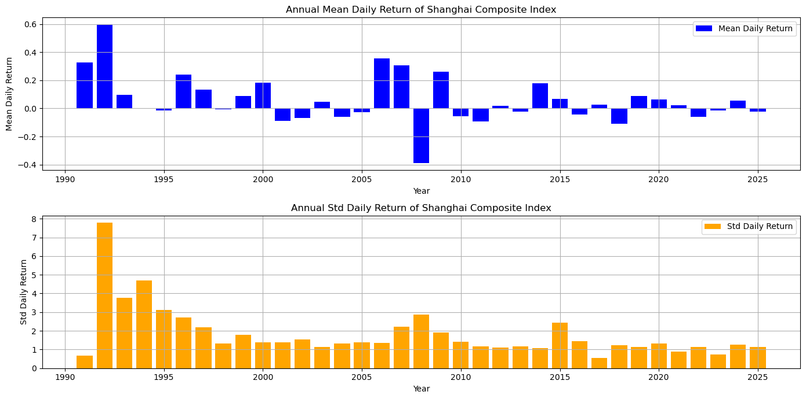
# 图示波动率
plt.figure(figsize=(14, 7))
plt.subplot(2, 1, 1)
plt.plot(sz_index['day'],
sz_index['daily_return'].rolling(window=30).std(),
label='30-Day Rolling Volatility',
color='red')
plt.title('SZ Index Daily Return Volatility')
plt.xlabel('Date')
plt.ylabel('Volatility')
plt.legend()
plt.grid()
plt.show() # 显示图形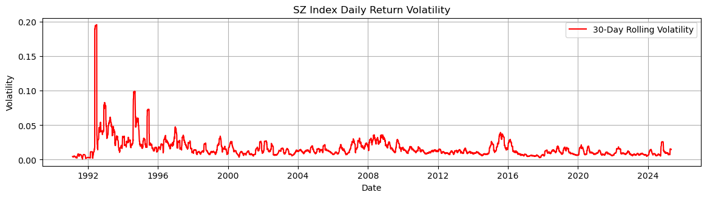
# 将日期列转换为 datetime 类型
sz_index['day'] = pd.to_datetime(sz_index['day'])
# 将收盘价列转换为浮点数类型
sz_index['close'] = sz_index['close'].astype('float')
# 创建一个示例 DataFrame，用于合并
data = pd.DataFrame({'time': sz_index['day'], 'pos_p': [0] * len(sz_index)})
# 合并两个 DataFrame，基于时间列进行内连接
data = data.merge(sz_index, left_on='time', right_on='day', how='inner')
# 绘制图表
plt.figure(figsize=(4, 3)) # 设置图表大小
data.index = data['time'] # 将时间列设置为索引
data[['pos_p', 'close']].plot(secondary_y=['close']) # 绘制双 Y 轴图表
plt.title('SH000001 15min K-line') # 设置图表标题
plt.show() # 显示图表<Figure size 400x300 with 0 Axes>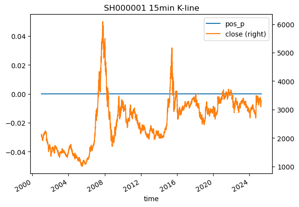